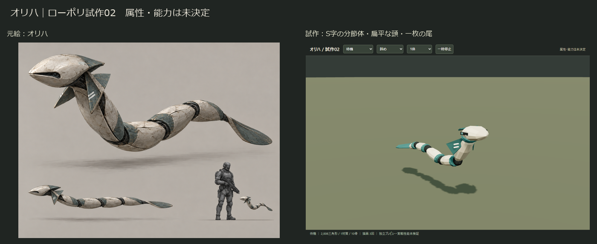
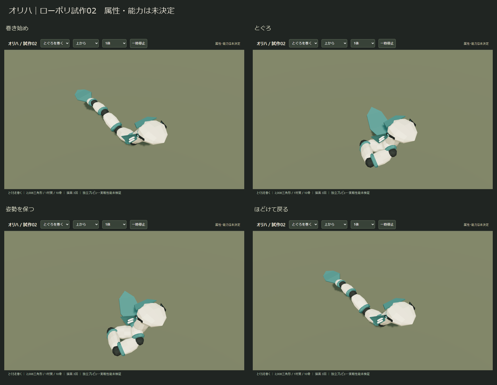
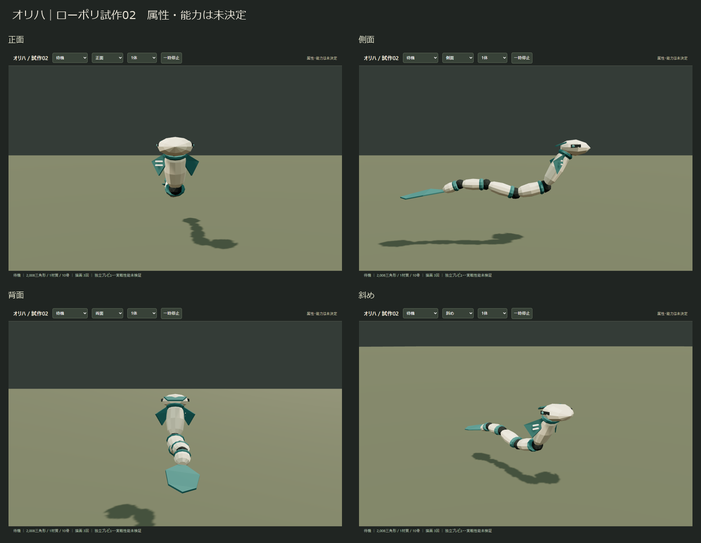
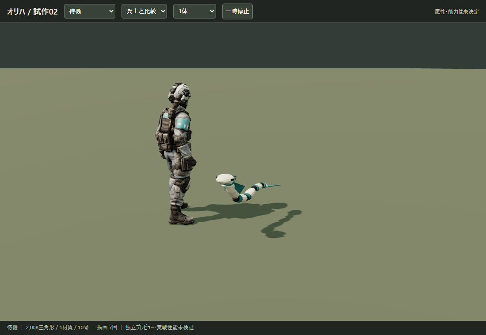
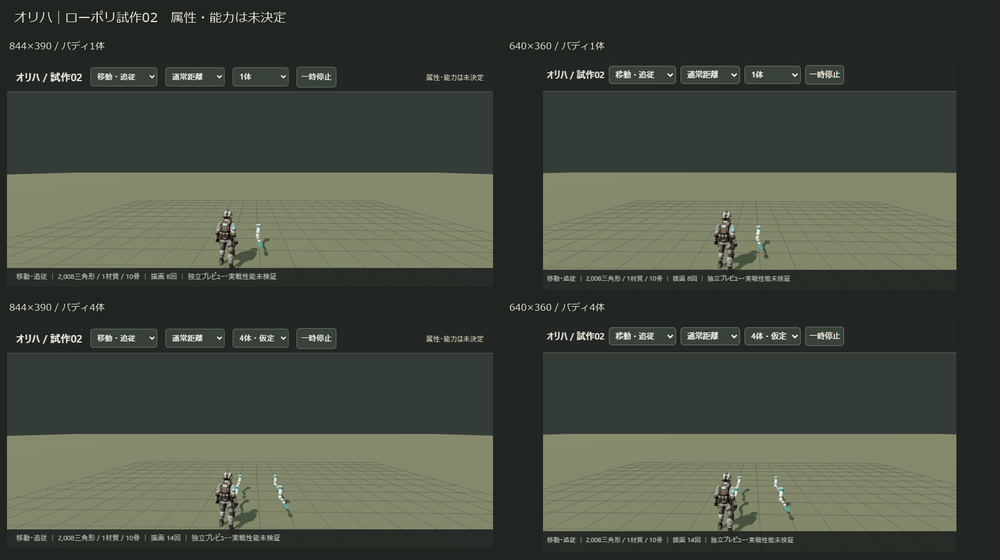

骨灰と青緑の扁平な分節体。S字に浮遊し、短い襟ひれ2枚と一枚の尾を持ちます。属性・能力は未決定です。
2,008三角形／1材質／10骨／テクスチャなし。編集用Blender・ゲーム用GLB・独立プレビュー・検証と引継ぎ

S字で浮遊 → 波打って追従 → 体を伸ばす → とぐろを巻いてほどく。経路や能力処理は含みません。




製品の画角・距離に準じた独立シーン。4体は4人各1体の仮定です。実スマホ・実戦性能は未確認です。